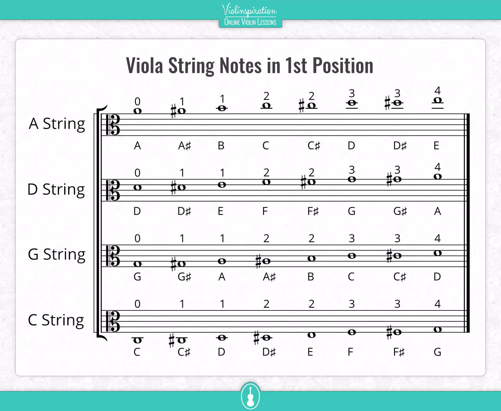

Hej jag heter Signe och jag ska berätta om tre av mina favorit stycken att spela på min altfiol som jag har spelat 11 eller 12 år
Mitt första favorit stycke heter Hönsafötter och det finns en text till och den går såhär Hönsafötter, gulerötter Mager som en trana Den som kysser töserna Han har en festlig vana Du är född i Köpenhamn Jag är född i Skåne Får jag vara din lille man Så får du vara min kåne tempot till Hönsafötter är snabbt och brakigt 
Min andra favorit stycke är Fransk Folkvisa är en låt där tempot är mitt emellan snabbt och långsamt och låter som ett classic stycke